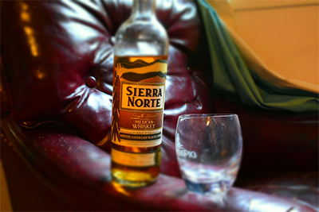

(click here to jump to tasting notes)
I started this journey with something that I've only noticed peripherally but never really thought to try. An American Whiskey by Westland Distillery.
At first glance the bottle itself
isn't that spectacular.
There are some really awesome labels and bottles out there!
Ones with colored wax and old twisting trees, cowboys and jackalopes or some with mythical gods that capture your attention and demand you dive deep
into the history of the distiller and throw back a glass to belong to the secret club.
This isn't one of them.
That being said, it's
effective in its simplistic design. The bright white diamond design guarantees you can pick it out of a lineup.
I'm curious about the little tree emblem on the top corner, I look forward to learning what that is after my tasting experience.
Tasting
The Look:
I thought the whiskey was going to be darker but once it was in the glass it was a light, almost cream soda color.
The Smell:
It smelled sweet. Apricots and Dates is what I was getting. I could also smell that it was higher proof. (92 Proof)
The First Sip:
I immediately got the intense burn of alcohol. Followed quickly by a very pleasant cedar taste.
Second Sip:
The second sip was ripe with citrus notes of tangerine and as the alcohol burned off I got a definite vanilla taste that was very delicious.
The Remainder:
There was a long-lasting warmth no doubt from the high proof but not unpleasant. The vanilla lingered.
Conclusion:
I'm a fan! This is one of those whiskies that I would love to have on a cold evening with good company. The high proof may take some getting used to
but if you're patient the lovely tangerine and vanilla make for a tasty experience.
Will drink again!!
Subscribe to see how many bottles I can put up on the Wall!

Whiskey Reviews

Cocktail Recipes